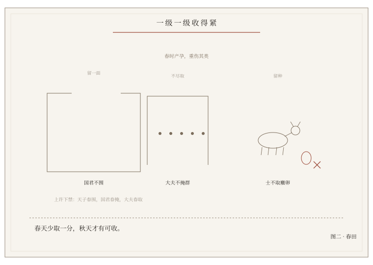

曲礼下 · 二·三十一 · 第 154 课
春天田猎，国君不合围，大夫不掩取群聚之兽，士不取幼兽与鸟卵。注「生乳之时，重伤其类」。
说什么事：国君春田不围泽，大夫不掩群，士不取麛卵。
落在哪一层：礼。论贵贱各有其限，一级比一级收得紧。
为何编在此位：上节收于「男女相答拜」，此节转到田猎。礼不止于人，及于兽。
【经】國君春田不圍澤，大夫不掩群，士不取麛卵。
【注】生乳之時，重傷其類。
【疏】此明贵贱田猎不同。国君，诸侯也。春时万物产孕，不欲多伤杀，故不合围绕取也，夏亦当然。「大夫不掩群」者，群谓禽兽共聚也。群聚则多，不可掩取之。「士不取麛卵」者，麛乃是鹿子之称，而凡兽子亦得通名也。卵，鸟卵也。春方乳长，故不得取也。然国君春田不围也，则天子春围。大夫春不掩，则国君春掩也。士春不取麛卵，则大夫春取也。而《王制》云「天子不合围，诸侯不掩群」，则与此异者，彼上云「天子诸侯无事，则岁三田」，郑云「三田者，谓夏不田」，则知彼亦夏礼也。又《史记》汤立三面网，而天下归仁，亦是不合围也。此间所明周制矣。
春田 春时之田猎。田，猎也。
围泽 合围而取，围泽即围其薮泽。
掩群 掩，覆取。群，禽兽共聚。疏「群聚则多，不可掩取之」。
麛 注疏「鹿子之称，而凡兽子亦得通名」。
卵 鸟卵。疏「春方乳长，故不得取」。
国君春天田猎，不合围薮泽；大夫不掩取群聚之兽；士不取幼兽与鸟卵。
此节一级一级地收：国不合围，大夫不掩群，士不取麛卵。位愈低，限愈紧。礼在这里说的不是仁政的大道理，是一件极具体的事——春天万物产孕，少杀一点。
第一层 限随位而降 疏说得很直：「国君春田不围也，则天子春围；大夫春不掩，则国君春掩；士春不取麛卵，则大夫春取。」每一级都被上一级所许、被下一级所禁。礼的等差，不是尊卑的排场，是责任的分配。
第二层 不围之义 围则尽取。汤立三面网而天下归仁，疏引之。留一面，是给活物留出路，也是给自己留余地。
第三层 不掩群 群聚者多，掩之则一网尽。所禁不在数，在「尽」。
第四层 不取麛卵 幼兽与卵，是来年的种。取之，则今年之获虽多，明年无所出。礼的算盘，比一季长。
与今日何干 禁渔期、禁猎幼兽、留种留苗，皆是此节之理。春天少取一分，秋天才有可收。
| 左 | 右 |
|---|---|
| 国君春田不围泽 | 不合围，留一面 |
| 大夫不掩群 | 群聚则多，不可尽取 |
| 士不取麛卵 | 幼兽与卵，来年之种 |
| 生乳之时 | 春时产孕，重伤其类 |
| 限随位而降 | 上许下禁，责任分配 |
| 周制与夏礼 | 《王制》之说当别看 |
画一片浅草与水泽的俯视轮廓，泽边三道不同开合的围线，自外至内：最外一圈敞开一大段缺口（示意国君不围），中圈只围住一小簇兽形轮廓的一半（示意大夫不掩群），内圈画两只幼兽与一枚卵，卵旁一道短横线（示意士不取）。三层之间以极淡的点线分隔，右下角留白。不写文字、不画具体动物五官。赭色只用在最内圈那枚卵上。
